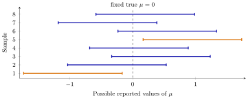

Source and provenance. Most of the contents of the Part VII lectures are taken from Bickel and Doksum (BD), Mathematical Statistics: Basic Ideas and Selected Topics, Volume I, second edition (2001) [1], and adapted to the course notation.
These lectures are newly prepared; they are not the original lecture notes from previous years. Original illustrations, numerical adaptations, and practice problems are identified below.
Lecture guide. This is the second lecture of Part VII and the final lecture of STAT 709. Lecture 21 developed tests and \(p\)-values; we now report sets of plausible parameter values, and then use asymptotic sampling laws when exact ones are unavailable.
The priority labels follow the course reading conventions.
Reading.
BD Section 4.4, pp. 233–241, and Section 4.5, pp. 241–248, supply confidence sets, pivots, and test inversion. For large-sample inference, see Sections 5.4.3–5.4.5, pp. 331–337; Section 6.3, pp. 392–400; and Section 6.4.1, pp. 401–403. Textbook numbers below refer to the supplied 2001 edition. The Berkeley Stat 210A reader provides a complementary explanation of confidence regions and test inversion [2].
A test addresses a specified hypothesis about the parameter. A confidence set reports the values that remain compatible with the data under a chosen procedure.
Both constructions need calibration: a statement about how the procedure behaves under repeated sampling.
We first obtain exact coverage from Normal sampling laws and pivots. Then the CLT, Slutsky’s theorem, and likelihood expansions give approximate coverage and approximate test levels.
Recap from earlier lecturesFrom earlier lectures: the tools used here · 1 min
Reminder only: this block introduces no new exam requirements.
Level and error control. A level-\(\alpha\) test has rejection probability at most \(\alpha\) at every null parameter. Used in test inversion.
The CLT and Slutsky’s theorem. A Normal limit can survive replacement of an unknown scale by a consistent estimate. Used to construct approximate intervals.
Fisher information. Information measures the local sensitivity of the model to its parameter. Used to scale the MLE and compare efficiency.
Learning goals
Explain what is random in a confidence interval and what its coverage guarantees.
Construct exact Normal intervals from pivots and invert a family of tests.
Use a Normal limit and a consistent standard error for approximate inference.
Explain the regular-model efficiency benchmark and distinguish Wald, score, likelihood-ratio, and Pearson chi-square statistics.
1. Confidence sets and coverage
Let \(X\sim P_\theta\), \(\theta\in\Theta\), and let \(\tau(\theta)\) be the quantity of interest. The parameter \(\theta\) specifies the entire data law; \(\tau(\theta)\) may be only one component, such as a mean when the variance is also unknown.
A data-dependent set \(C(X)\) is a level-\((1-\alpha)\) confidence set for \(\tau(\theta)\) if the relevant events are measurable and \[P_\theta\{\tau(\theta)\in C(X)\}\geq 1-\alpha \qquad\text{for every }\theta\in\Theta.\] For a real-valued target, a set \(C(X)=[L(X),U(X)]\) is a confidence interval. A lower confidence bound \(L(X)\) satisfies \(P_\theta\{L(X)\leq\tau(\theta)\}\geq1-\alpha\) for every \(\theta\); an upper confidence bound is defined with the reverse inequality.
The coverage probability at \(\theta\) is \(P_\theta\{\tau(\theta)\in C(X)\}\). BD calls its infimum over \(\Theta\) the confidence coefficient. For a procedure satisfying this definition, \(1-\alpha\) is a guaranteed lower bound, and actual coverage can be larger. A nominal level attached to an approximate interval need not be a finite-sample guarantee; Section 4 states the corresponding limiting claim.
The probability statement concerns \(C(X)\) before observing the sample.
After observing \(X=x\), the reported set \(C(x)\) is fixed. Frequentist coverage does not by itself assign probability \(1-\alpha\) to the fixed parameter lying in that particular reported set.
Such a posterior probability would require a different, Bayesian probability model.
Instructor’s NoteKeep the parameter fixed
Imagine marking the true mean on a number line, then collecting a fresh sample and drawing a new interval each time. The mark stays still; the interval moves. Coverage describes how often this interval-making rule catches the mark. It does not say that every batch of twenty intervals must contain exactly nineteen successes.
1.1. An exact Normal interval
Model and notation. Suppose \(X_1,\ldots,X_n\) are i.i.d. \(N(\mu,\sigma^2)\), with known \(\sigma>0\). Write \(z_q=\Phi^{-1}(q)\), where \(\Phi\) is the standard Normal CDF.
Sampling law. The sampling law gives \[Z(\mu)=\frac{\sqrt n(\overline X-\mu)}{\sigma}\sim N(0,1), \qquad P_\mu\{-z_{1-\alpha/2}\leq Z(\mu)\leq z_{1-\alpha/2}\}=1-\alpha.\]
Invert the inequality. Solve the inequality inside the probability for \(\mu\). We obtain
\[C(X)=\left[\overline X-z_{1-\alpha/2}\frac{\sigma}{\sqrt n},\; \overline X+z_{1-\alpha/2}\frac{\sigma}{\sqrt n}\right].\]
(1)
This interval has coverage exactly \(1-\alpha\) for every \(\mu\); see BD Section 4.4, pp. 234–235. Its half-width is \(z_{1-\alpha/2}\sigma/\sqrt n\): greater confidence widens the interval, whereas more observations reduce its width.
Continuation of Lecture 21’s Normal example.
With \(n=25\), \(\sigma=2\), and observed \(\overline x=.8\), the 95% interval is \[.8\pm1.960\frac{2}{5}\simeq[.016,1.584].\] The value \(0\) is outside it, agreeing with Lecture 21’s two-sided test, whose \(p\)-value is approximately \(.0455\). This agreement will become a precise test–confidence-set duality in Section 3.

2. Pivotal quantities
A pivotal quantity is a function \(Q(X,\theta)\) whose sampling distribution is known and does not depend on the unknown parameter \(\theta\). It may involve unknown parameters, so a pivot need not be a statistic computable from the data alone.
Probability statement. If \(P_\theta\{a\leq Q(X,\theta)\leq b\}=1-\alpha\) for every \(\theta\), then \[C(X)=\{\theta\in\Theta:a\leq Q(X,\theta)\leq b\}\] has exact coverage \(1-\alpha\) for the full parameter.
Target parameter. When the pivot depends on \(\theta\) only through a target \(\tau(\theta)\), invert it directly for that target.
Shape of the set. Inversion may produce an interval, a one-sided set, or a more general set; an interval is not automatic. The Normal \(Z(\mu)\) above is a pivot.
2.1. The mean when the variance is unknown
Continue with i.i.d. \(N(\mu,\sigma^2)\) observations, now with both parameters unknown and \(n\geq2\). Define \[S^2=\frac{1}{n-1}\sum_{i=1}^n(X_i-\overline X)^2.\] Here the denominator is \(n-1\); \(S^2\) is not the variance MLE with denominator \(n\). The Normal sampling identities are \[Z=\frac{\sqrt n(\overline X-\mu)}{\sigma}\sim N(0,1),\qquad V=\frac{(n-1)S^2}{\sigma^2}\sim\chi^2_{n-1},\qquad Z\ \text{independent of }V.\] One way to see the independence is to apply an orthogonal transformation to \(((X_1-\mu)/\sigma,\ldots,(X_n-\mu)/\sigma)\), with first row \(n^{-1/2}(1,\ldots,1)\). Its coordinates remain independent standard Normals. The first is \(Z\); the sum of squares of the other \(n-1\) is \(V\).
By the definition of a Student distribution, \[T(\mu)=\frac{Z}{\sqrt{V/(n-1)}}= \frac{\sqrt n(\overline X-\mu)}{S}\sim t_{n-1}.\]
This law does not depend on either unknown parameter. With \(t_{\nu,q}\) the \(q\)-quantile of \(t_\nu\), inversion gives
\[\left[\overline X-t_{n-1,1-\alpha/2}\frac{S}{\sqrt n},\; \overline X+t_{n-1,1-\alpha/2}\frac{S}{\sqrt n}\right].\]
(2)This is BD Example 4.4.1, pp. 235–236. It has exact coverage \(1-\alpha\) for every \((\mu,\sigma^2)\) in the Normal model.
For \(n=16\), observed \(\overline x=5\) and \(s=2\), a 95% interval is \(5\pm 2.131(2/4)\simeq[3.934,6.066]\) (new numerical values).
Instructor’s NoteEstimating the scale costs something
The denominator \(S\) moves from sample to sample too. Student’s distribution accounts for that extra variation, using a larger critical value than the Normal distribution at the same confidence level. For large samples the two critical values become close.
The exact \(t\) law uses Normal observations. For a general i.i.d. population with finite positive variance, the studentized mean has a standard Normal limit; this is an asymptotic justification, not an exact \(t\) law.
BD Example 4.4.2, pp. 236–237, uses the same \(V\) to estimate \(\sigma^2\). Write \(\chi^2_{\nu,q}\) for the \(q\)-quantile of a chi-square distribution with \(\nu\) degrees of freedom. Solving \[\chi^2_{n-1,\alpha/2}\leq\frac{(n-1)S^2}{\sigma^2} \leq\chi^2_{n-1,1-\alpha/2}\] gives the exact Normal-model interval
\[\left[\frac{(n-1)S^2}{\chi^2_{n-1,1-\alpha/2}},\; \frac{(n-1)S^2}{\chi^2_{n-1,\alpha/2}}\right].\]
(3)Notice the reversal of the two quantiles when solving for \(\sigma^2\). Unlike the mean’s studentized Normal limit, this chi-square calibration is not generally rescued by merely assuming finite variance in a non-Normal population.
3. The duality between tests and confidence sets
For every proposed target value \(t\), consider a nonrandomized test \(\varphi_t(X)\in\{0,1\}\) of \(H_{0,t}:\tau(\theta)=t\), with \(1\) meaning rejection. The null may be composite because other components of \(\theta\) are unspecified. Assume that every test has level \(\alpha\) over its null: \[\sup_{\theta:\tau(\theta)=t}P_\theta\{\varphi_t(X)=1\}\leq\alpha.\]
The set \(C(X)=\{t:\varphi_t(X)=0\}\) is a level-\((1-\alpha)\) confidence set for \(\tau(\theta)\). Conversely, a level-\((1-\alpha)\) confidence set produces level-\(\alpha\) tests by rejecting \(t\) exactly when \(t\notin C(X)\).
Proof. For any true parameter \(\theta\), the two events \(\{\tau(\theta)\notin C(X)\}\) and \(\{\varphi_{\tau(\theta)}(X)=1\}\) are identical. Hence \[P_\theta\{\tau(\theta)\in C(X)\} =1-P_\theta\{\varphi_{\tau(\theta)}(X)=1\}\geq1-\alpha.\] Read the same identity in reverse for the converse. ◻
We are inverting a family of tests, one for every proposed value, while keeping the observed data fixed.
We need not separately correct for multiple testing to obtain this coverage statement: at a fixed true \(\theta\), noncoverage is exactly rejection of the one true target value.
This is the duality argument, not a claim about simultaneous truth of all possible conclusions. See also the complementary explanation in [2].
3.1. Normal tests, intervals, and \(p\)-values
In the known-variance Normal model, reject \(H_0:\mu=\mu_0\) against a two-sided alternative when \[\left|\frac{\sqrt n(\overline X-\mu_0)}{\sigma}\right|>z_{1-\alpha/2}.\]
Invert the test. For fixed data, the values \(\mu_0\) not rejected satisfy \(|\overline x-\mu_0|\leq z_{1-\alpha/2}\sigma/\sqrt n\), exactly the interval in (1). The same argument with \(T(\mu_0)\) and its \(t\) critical value gives (2); this is BD Example 4.5.1, pp. 241–242, including the unknown-variance case.
The matching tail probability. For the two-sided Normal test, define \[p_{\mu_0}(x)=2\left[1-\Phi\left( \left|\frac{\sqrt n(\overline x-\mu_0)}{\sigma}\right|\right)\right].\]
Boundary convention. With the strict critical-value rejection rule just used, \(C(x)=\{\mu_0:p_{\mu_0}(x)\geq\alpha\}\). If instead rejection is defined by \(p_{\mu_0}(x)\leq\alpha\), as in Lecture 21’s general valid-\(p\)-value rule, then inversion gives \(\{\mu_0:p_{\mu_0}(x)>\alpha\}\). These two Normal intervals differ only in their endpoints. For each true \(\mu\), equality has probability zero, so both have the same coverage. For discrete data, endpoint conventions and unattainable tail probabilities can matter; retain the exact test rule when inverting it.
Use the same calibration. A confidence interval and a \(p\)-value should agree when they come from the same model, test family, tail convention, and calibration. A one-sided test and a two-sided interval need not give matching decisions.
4. Large-sample intervals and tests
4.1. An approximate pivot
An exact pivot is often unavailable. Suppose for each fixed \(\theta\) that \[\sqrt n(\widehat\theta_n-\theta)\xrightarrow{d}N(0,v(\theta)), \qquad \widehat v_n\xrightarrow{P}v(\theta)>0.\] Define the estimated standard error by \(\widehat{\operatorname{se}}_n=\sqrt{\widehat v_n/n}\). On exceptional samples where \(\widehat v_n\leq0\), define the procedure arbitrarily; the assumptions make the probability of these samples tend to zero. This convention addresses a limit theorem, not the practical quality of an interval on such a sample.
Under these assumptions, \[Z_n(\theta)=\frac{\widehat\theta_n-\theta} {\widehat{\operatorname{se}}_n}\xrightarrow{d}N(0,1),\] and the Wald interval
\[C_n(X)=\left[\widehat\theta_n-z_{1-\alpha/2}\widehat{\operatorname{se}}_n, \widehat\theta_n+z_{1-\alpha/2}\widehat{\operatorname{se}}_n\right]\]
(4)satisfies \(P_\theta\{\theta\in C_n(X)\}\longrightarrow1-\alpha\).
Proof. Slutsky’s theorem gives the asserted Normal limit. On samples where \(\widehat v_n>0\), noncoverage is the event \(|Z_n(\theta)|>z_{1-\alpha/2}\). The two events can differ only on the exceptional samples, whose probability tends to zero. Since the limiting Normal law has no mass at either cutoff, the noncoverage probability tends to \(\alpha\). ◻
Likewise, reject \(H_0:\theta=\theta_0\) when \(|Z_n(\theta_0)|>z_{1-\alpha/2}\), with approximate two-sided \(p\)-value \(2[1-\Phi(|Z_n(\theta_0)|)]\).
The null rejection probability tends to \(\alpha\); this is not a finite-sample level guarantee.
The coverage assertion is pointwise: it holds at each fixed parameter in the stated model.
It does not by itself give uniform coverage over parameters that approach a boundary as \(n\) grows.
If the target is restricted to \(\Theta\), intersecting the interval with \(\Theta\) does not change whether the true parameter is covered.
Sampling limit. For i.i.d. \(\operatorname{Bernoulli}(p)\) data, with fixed \(0<p<1\), let \(\widehat p=\overline X\). The CLT gives asymptotic variance \(p(1-p)\) and consistency gives \(\widehat p(1-\widehat p)\xrightarrow{P}p(1-p)\).
Plug-in interval. Thus an approximate interval is \[\widehat p\pm z_{1-\alpha/2} \sqrt{\frac{\widehat p(1-\widehat p)}{n}}.\]
Two variance choices. This is BD Example 4.4.3, specifically equation (4.4.7), p. 238. Do not confuse it with BD’s earlier interval obtained by inverting the null-based variance \(p(1-p)\); Exercise 5 derives that different, score-based interval.
Boundary samples. If all trials are failures or all are successes, this estimated standard error is zero. The resulting collapsed interval illustrates why the large-sample approximation can be poor near a boundary. Exact binomial test inversion in BD Example 4.5.2, pp. 244–246, supplies a finite-sample alternative; a large-sample formula alone does not settle those cases.
4.2. Likelihood, information, and efficiency
Let \(X_1,\ldots,X_n\) be i.i.d. from an identifiable model with density or mass function \(f_\theta\), where the scalar parameter lies in an open interval. Write \(L_n(\theta)=\prod_{i=1}^n f_\theta(X_i)\) for the sample likelihood and \(\ell_n(\theta)=\log L_n(\theta)\) for its logarithm. Thus \[\ell_n(\theta)=\sum_{i=1}^n\log f_\theta(X_i),\qquad U_n(\theta)=\ell_n'(\theta),\qquad J_n(\theta)=-\frac1n\ell_n''(\theta).\] Here \(U_n\) is the score. Information \(I(\theta)\) below is for one observation; total sample information is \(nI(\theta)\). For the scalar calculations that follow, assume at the true parameter:
The true parameter is interior, the model has common support locally, and the log densities are twice continuously differentiable there.
The one-observation score \(s_\theta(X)=\partial_\theta\log f_\theta(X)\) has mean zero and variance \(0<I(\theta)=E_\theta s_\theta(X)^2<\infty\). The information identity \(I(\theta)=-E_\theta\partial_\theta^2\log f_\theta(X)\) holds.
\(J_n(t)\) converges in probability to \(I(\theta)\) uniformly as \(t\) approaches \(\theta\): for every deterministic \(\delta_n\downarrow0\), \(\sup_{|t-\theta|\leq\delta_n}|J_n(t)-I(\theta)|\xrightarrow{P}0\).
A consistent MLE \(\widehat\theta_n\) exists and solves \(U_n(\widehat\theta_n)=0\) with probability tending to one.
These are explicit sufficient conditions for the following local argument. BD Sections 5.4.2–5.4.3 give a systematic formulation as conditions A0–A6; they must be checked for the model, not inferred from the name “maximum likelihood.”
Under the preceding conditions, the scalar version of BD Theorem 5.4.3, p. 331, gives
\[\sqrt n(\widehat\theta_n-\theta)\xrightarrow{d} N\left(0,I(\theta)^{-1}\right).\]
(5)Expand the score. Here is the basic argument. Taylor-expand the score about \(\theta\): \[0=U_n(\widehat\theta_n) =U_n(\theta)-nJ_n(\widetilde\theta_n)(\widehat\theta_n-\theta),\] with \(\widetilde\theta_n\) between \(\theta\) and \(\widehat\theta_n\).
Apply the limit theorems. Consistency and the local uniform convergence assumption give \(J_n(\widetilde\theta_n)\xrightarrow{P}I(\theta)\). The CLT gives \(U_n(\theta)/\sqrt n\xrightarrow{d}N(0,I(\theta))\); division and Slutsky prove (5).
Estimate the standard error. If \(I\) is continuous at \(\theta\), an estimated standard error is \([nI(\widehat\theta_n)]^{-1/2}\). One may instead use \([nJ_n(\widehat\theta_n)]^{-1/2}\) when it is positive; local convergence makes this positive with probability tending to one.
What efficiency means here.
BD Theorem 5.4.3 also proves an asymptotic variance bound \(v(\theta)\geq I(\theta)^{-1}\) for the minimum-contrast estimators satisfying its regularity conditions. The regular MLE achieves that bound; this is asymptotic efficiency in that comparison class.
It is not a claim of smallest finite-sample mean-squared error, or of optimality among every possible sequence of estimators. BD’s Hodges example, p. 332, explains why that qualification matters.
For a fixed alternative \(\theta_1\ne\theta_0\), a consistent estimator with \(\widehat v_n\xrightarrow{P}v(\theta_1)\in(0,\infty)\) satisfies \(|Z_n(\theta_0)|\xrightarrow{P}\infty\). Its two-sided Wald test therefore has power tending to one: consistency against a fixed alternative.
Low priority — not examined: The information-bound calculation
The mechanism behind BD’s efficiency comparison is Cauchy–Schwarz. Suppose an estimator has expansion \[\sqrt n(\widetilde\theta_n-\theta)= \frac1{\sqrt n}\sum_{i=1}^n h_\theta(X_i)+o_P(1),\] where \(E_\theta h_\theta=0\), \(E_\theta h_\theta^2<\infty\), and \(E_\theta[h_\theta s_\theta]=1\). The last identity is a regularity condition; consistency alone does not supply it. Then \[1=(E_\theta[h_\theta s_\theta])^2 \leq E_\theta h_\theta^2\, E_\theta s_\theta^2 =v(\theta)I(\theta).\] Equality holds when \(h_\theta=I(\theta)^{-1}s_\theta\) almost surely, which is the MLE’s first-order expansion. This restates the correlation inequality argument in BD’s proof on p. 332.
5. Likelihood and chi-square tests
5.1. Calibrating a likelihood ratio
For \(H_0:\theta=\theta_0\) in the regular scalar model, keep Lecture 21’s ratio convention: \[\Lambda_n=\frac{L_n(\theta_0)}{L_n(\widehat\theta_n)}\leq1, \qquad W_{\mathrm{LR}}=-2\log\Lambda_n =2\{\ell_n(\widehat\theta_n)-\ell_n(\theta_0)\}\geq0.\] BD notation. BD Section 6.3 uses the reciprocal ratio \(\Lambda_{\mathrm{BD}}=1/\Lambda_n\geq1\). Our \(-2\log\Lambda_n\) is therefore BD’s \(2\log\Lambda_{\mathrm{BD}}\); in both conventions, large log-likelihood differences lead to rejection.
Under the regularity conditions at \(\theta_0\) in Section 4.2, under \(H_0\), \[W_{\mathrm{LR}}\xrightarrow{d}\chi^2_1.\] Thus rejecting when \(W_{\mathrm{LR}}>\chi^2_{1,1-\alpha}\) has limiting null rejection probability \(\alpha\); its approximate \(p\)-value is \(P\{\chi^2_1\geq W_{\mathrm{LR,obs}}\}\).
Why chi-square appears. The explanation is local quadratic curvature: twice the log-likelihood loss is approximately the squared estimation error measured in information units, \(nI(\theta_0)(\widehat\theta_n-\theta_0)^2\). The MLE limit makes that quantity a squared standard Normal, hence a \(\chi^2_1\) limit.
An exact special case. In Lecture 21’s known-variance Normal mean example, \(W_{\mathrm{LR}}=n(\overline X-\mu_0)^2/\sigma^2=Z^2\) has a \(\chi^2_1\) law exactly. Wilks’ result is the large-sample extension; exactness should not be carried over to a general likelihood model.
Low priority — not examined: The scalar likelihood-ratio proof
Taylor-expand \(\ell_n(\theta_0)\) about its interior maximizer \(\widehat\theta_n\). The first derivative there is zero, so for some \(\theta_n^*\) between them, \[W_{\mathrm{LR}}=nJ_n(\theta_n^*) (\widehat\theta_n-\theta_0)^2.\] Under \(H_0\), consistency gives \(\theta_n^*\xrightarrow{P}\theta_0\), and local uniform convergence gives \(J_n(\theta_n^*)\xrightarrow{P}I(\theta_0)\). Equation (5), the continuous mapping theorem, and Slutsky now give \(W_{\mathrm{LR}}\xrightarrow{d}Z^2\) for \(Z\sim N(0,1)\). This is the one-dimensional version of BD’s proof on p. 394.
5.2. Wald, score, and likelihood-ratio statistics
Assume the same regular scalar model and continuity of \(I\). For the point null \(\theta=\theta_0\), the standard statistics are
| Test | Statistic | What is measured? |
|---|---|---|
| Wald | \(W_{\mathrm W}=nI(\widehat\theta_n)(\widehat\theta_n-\theta_0)^2\) | Distance of estimate from null |
| Score (Rao) | \(W_{\mathrm S}=U_n(\theta_0)^2/[nI(\theta_0)]\) | Slope at the null |
| Likelihood ratio | \(W_{\mathrm{LR}}=2\{\ell_n(\widehat\theta_n)-\ell_n(\theta_0)\}\) | Loss from imposing the null |
Each tends to \(\chi^2_1\) under \(H_0\), and their pairwise differences tend to zero in probability under \(H_0\).
For Wald this follows from (5); for score it follows from the score CLT. The score expansion used for the MLE relates the two, and the quadratic likelihood expansion relates them to LR. See BD Sections 5.4.4 and 6.3.2.
Finite-sample values and confidence sets can nevertheless differ.
For Bernoulli data, \(I(p)=1/[p(1-p)]\) and \(U_n(p_0)=n(\widehat p-p_0)/[p_0(1-p_0)]\). Hence \[\begin{aligned} W_{\mathrm W}&=\frac{n(\widehat p-p_0)^2}{\widehat p(1-\widehat p)},& W_{\mathrm S}&=\frac{n(\widehat p-p_0)^2}{p_0(1-p_0)},\\ W_{\mathrm{LR}}&=2n\left\{\widehat p\log\frac{\widehat p}{p_0} +(1-\widehat p)\log\frac{1-\widehat p}{1-p_0}\right\}.&& \end{aligned}\]
These formulas distinguish the estimated variance from the null variance; all require appropriate calibration.
The regular asymptotic argument fixes \(0<p_0<1\). Use \(0\log0=0\) to evaluate the LR expression at an observed boundary; the Wald statistic is undefined there. Exercise 5 derives the score interval from this formula.
5.3. Likelihood confidence sets
Candidate values. The same duality applies to approximate tests. For each candidate \(t\) in the regular scalar model, write \(W_{\mathrm{LR}}(t)=2\{\ell_n(\widehat\theta_n)-\ell_n(t)\}\).
Invert the statistic. The set \[C_n(X)=\{t:W_{\mathrm{LR}}(t)\leq\chi^2_{1,1-\alpha}\}\] has limiting coverage \(1-\alpha\) at each fixed true interior parameter where the Wilks limit holds. Indeed, coverage at \(\theta\) is exactly the event \(W_{\mathrm{LR}}(\theta)\leq\chi^2_{1,1-\alpha}\). This combines BD’s duality theorem with its likelihood-ratio limit.
Compare with Wald. The quadratic approximation to the log likelihood gives the corresponding Wald interval locally, since \(\chi^2_{1,1-\alpha}=z_{1-\alpha/2}^2\). The actual likelihood confidence set can be asymmetric and need not be an interval. For a scalar target with nuisance parameters, the appropriate extension maximizes over the nuisance parameters at each candidate value; its calibration needs the additional regular multiparameter conditions.
Further reading: Several restrictions and the limits of the approximation
For a fixed-dimensional regular model with \(d\) parameters and a smooth interior null imposing \(r\) independent restrictions, BD Theorems 6.3.2–6.3.3, pp. 395–397, give \(-2\log\Lambda_n\xrightarrow{d}\chi^2_r\) under the null.
Here \(r\) is the dimension lost under the null, not the number of observations or the number of fitted parameters. The restricted MLE and the null model must satisfy the corresponding regularity conditions.
Boundary nulls, nonidentifiability, and parameter-dependent support can invalidate this law.
For example, the Uniform endpoint model of Exercise 2 has parameter-dependent support; its exact pivot does not justify a routine \(\chi^2_1\) likelihood-ratio approximation.
The multiparameter proof and nonregular limits are further reading.
5.4. Pearson’s chi-square goodness-of-fit test
Suppose \(N=(N_1,\ldots,N_k)\sim\operatorname{Multinomial}(n,p)\) and test \(H_0:p=p^0\), where the \(k\) probabilities \(p_j^0>0\) are specified in advance and sum to one. Keep \(k\) fixed as \(n\to\infty\).
The Pearson chi-square statistic is
\[X^2=\sum_{j=1}^k\frac{(N_j-np_j^0)^2}{np_j^0} \underset{H_0}{\overset{d}{\longrightarrow}}\chi^2_{k-1}.\]
(6)There are \(k-1\) degrees of freedom because the \(k\) count deviations sum to zero.
Reject for \(X^2>\chi^2_{k-1,1-\alpha}\); the approximate \(p\)-value is the upper tail of that chi-square law. This is BD Section 6.4.1, pp. 401–403, equation (6.4.1).
Likelihood-ratio statistic. For the same multinomial model, the likelihood-ratio statistic is \[G^2=2\sum_{j=1}^kN_j\log\frac{N_j}{np_j^0},\qquad 0\log0:=0.\]
Same limiting calibration. A Taylor expansion about \(N_j=np_j^0\), with the linear terms cancelling, gives \(G^2=X^2+o_P(1)\) under the fixed interior null. Thus both use the same limiting calibration.
Expected counts. Small expected counts can make that approximation poor; the fixed-positive-probability assumption makes every \(np_j^0\) grow in the stated limit.
Fitted models. If model parameters are estimated from these counts, the simple-null \(k-1\) rule cannot be reused without accounting for the fitted constraints (BD Section 6.4.2).
BD Example 6.4.1: Mendel’s four categories.
BD reports the counts below, with theoretical probabilities \((9,3,3,1)/16\) and total \(n=556\).
| Category | Observed | Expected under \(H_0\) |
|---|---|---|
| Round yellow | 315 | 312.75 |
| Wrinkled yellow | 101 | 104.25 |
| Round green | 108 | 104.25 |
| Wrinkled green | 32 | 34.75 |
The statistic is \(X^2\simeq.470\), with three degrees of freedom and approximate \(p\)-value \(.925\).
Thus the test does not reject at level \(.05\).
This is a statement about discrepancy under the model, not a posterior probability that the theory is true.
The counts and model are from BD, p. 403; the displayed numerical tail is recalculated here.
Low priority — not examined: Why one degree of freedom is lost
Under the multinomial CLT, the standardized residual vector \(Y_{n,j}=(N_j-np_j^0)/\sqrt{np_j^0}\) converges to a centered Normal vector with covariance \(I_k-aa^T\), where \(a_j=\sqrt{p_j^0}\) and \(a^Ta=1\). This matrix is the orthogonal projection onto the \((k-1)\)-dimensional space perpendicular to \(a\). In orthonormal coordinates on that space, the limit has \(k-1\) independent standard Normal components and one zero component. Therefore \(X^2=Y_n^TY_n\xrightarrow{d}\chi^2_{k-1}\). This is an elementary CLT/projection justification of the calibration in BD Section 6.4.1.
Key ideas
Coverage describes a random set under repeated sampling; the parameter is fixed.
Exact pivots give finite-sample coverage. Approximate pivots require a limit argument and a reliable standard error.
Inverting level-\(\alpha\) tests gives a level-\((1-\alpha)\) confidence set for the tested target.
Regular likelihood theory connects information, efficient estimation, and Wald, score, and likelihood-ratio tests.
Chi-square degrees of freedom come from the model’s constraints; exact and asymptotic calibrations must remain distinct.
Detailed reference
Supplemental reference: key notions and definitions
The rows retain the priority of their source blocks. This is a reference guide, not a replacement for the hypotheses of the results.
| Notion | Definition or key fact | Tier |
|---|---|---|
| Confidence set | \(P_\theta\{\tau(\theta)\in C(X)\}\geq1-\alpha\) for every \(\theta\). The set is random. | High |
| Coverage probability and coefficient | Coverage is the probability at a given parameter; the coefficient is its infimum over the model. | High |
| One-sided bound | A lower bound satisfies \(P_\theta\{L(X)\leq\tau(\theta)\}\geq1-\alpha\); an upper bound reverses the inequality. | High |
| Normal mean interval | Known variance: \(\overline X\pm z_{1-\alpha/2}\sigma/\sqrt n\), exact under Normal sampling. | High |
| Pivotal quantity | \(Q(X,\theta)\) has a known parameter-free law; it need not be a statistic. | High |
| Student pivot and interval | \(\sqrt n(\overline X-\mu)/S\sim t_{n-1}\) exactly for Normal data; use \(S^2=\sum_i(X_i-\overline X)^2/(n-1)\). | High |
| Variance pivot | \((n-1)S^2/\sigma^2\sim\chi^2_{n-1}\) in the Normal model. | Mid |
| Test inversion | \(C(X)=\{t:\varphi_t(X)=0\}\); noncoverage is rejection of the true target value. | High |
| Intervals and \(p\)-values | Invert the same test family and boundary convention. With rejection at \(p_t<\alpha\), retain \(p_t\geq\alpha\). | High |
| Estimated standard error | \(\widehat{\operatorname{se}}=\sqrt{\widehat v_n/n}\) estimates the scale of the estimator’s sampling fluctuation. | High |
| Wald interval and test | \(\widehat\theta_n\pm z_{1-\alpha/2}\widehat{\operatorname{se}}\) has limiting coverage \(1-\alpha\) under the stated CLT and consistency assumptions. | High |
| Pointwise asymptotic coverage | Coverage tends to \(1-\alpha\) for each fixed parameter; this need not be uniform over moving parameters. | High |
| Score and information | \(U_n=\ell_n'\); \(I(\theta)\) is information per observation, and \(nI(\theta)\) is total information. | Mid |
| Regular MLE limit | \(\sqrt n(\widehat\theta_n-\theta)\Rightarrow N(0,I(\theta)^{-1})\), subject to regularity and consistency. | Mid |
| Asymptotic efficiency | Achieving the information bound within the stated regular comparison class, not universal finite-sample optimality. | Mid |
| Information-bound proof | An asymptotic linear expansion and \(E(hs)=1\) give \(vI\geq1\) by Cauchy–Schwarz. | Low |
| Scalar likelihood-ratio limit | \(-2\log\Lambda_n\Rightarrow\chi^2_1\) under a regular scalar point null; BD uses the reciprocal ratio. | Mid |
| Scalar Wilks proof | Expand the log likelihood at the MLE, then use its Normal limit and local curvature convergence. | Low |
| Wald and score statistics | \(nI(\widehat\theta_n)(\widehat\theta_n-\theta_0)^2\) and \(U_n(\theta_0)^2/[nI(\theta_0)]\) share the regular \(\chi^2_1\) limit. | Mid |
| Likelihood confidence set | Retain candidates whose likelihood-ratio statistics are at most the appropriate chi-square critical value; coverage is asymptotic. | Mid |
| Pearson goodness of fit | \(X^2=\sum_j(N_j-np_j^0)^2/(np_j^0)\Rightarrow\chi^2_{k-1}\) for a fixed, fully specified, positive multinomial null. | Mid |
| Degrees-of-freedom argument | The limiting standardized count residuals occupy a \((k-1)\)-dimensional subspace. | Low |
| Several restrictions | Under the additional regular multiparameter conditions, \(r\) independent restrictions give a \(\chi^2_r\) limit. | Further |
Looking ahead
This completes STAT 709. The course’s recurring chain is: specify a model, understand a statistic’s sampling law, and use that law to assess estimation error or calibrate a decision. Further study extends these ideas to richer models and more demanding settings; the habit to retain is reporting the estimate, its uncertainty, and the assumptions that justify both. Review the two lectures through the Part VII checkpoint.
6. Exercises and complete solutions6 exercises · complete solutions
Let \(X_i\) be i.i.d. \(N(\mu,4)\). Find the smallest integer \(n\) for which the usual 95% interval has half-width at most \(.25\). Explain why the answer does not require knowing \(\mu\) or observing \(\overline X\).
Reveal solution
The half-width is \(z_{.975}2/\sqrt n\). Thus \[n\geq\left(\frac{2z_{.975}}{.25}\right)^2 \simeq245.85,\] so the smallest integer is \(246\). The half-width depends only on the known scale, chosen confidence level, and sample size. The unknown mean and the observed sample mean locate the interval but do not change its width.
Suppose \(X_1,\ldots,X_n\) are i.i.d. \(\operatorname{Uniform}(0,\theta)\), \(\theta>0\), and \(M=\max_iX_i\). Find the CDF of \(Q=M/\theta\). Construct an exact level-\((1-\alpha)\) confidence interval for \(\theta\) with lower endpoint \(M\), and verify its coverage.
Reveal solution
For \(0\leq u\leq1\), independence gives \[P_\theta(M/\theta\leq u)=\prod_{i=1}^nP_\theta(X_i\leq\theta u)=u^n.\] The CDF is zero below zero and one above one, so this is a pivot. Let \(a=\alpha^{1/n}\). Its continuous distribution gives \(P_\theta(a\leq M/\theta\leq1)=1-a^n=1-\alpha\). Solving both inequalities for \(\theta\) yields \[C(X)=[M,M/\alpha^{1/n}].\] Equivalently, \(M\leq\theta\) almost surely, and the upper endpoint covers \(\theta\) exactly when \(M/\theta\geq\alpha^{1/n}\), which has probability \(1-\alpha\). The endpoints need not be symmetric about an estimator.
For i.i.d. \(N(\mu,\sigma^2)\) data with known \(\sigma>0\), invert the level-\(\alpha\) tests that reject \(\mu=\mu_0\) against \(\mu>\mu_0\) when \(\sqrt n(\overline X-\mu_0)/\sigma>z_{1-\alpha}\). Give the resulting one-sided confidence set and verify coverage directly. For \(n=25\), \(\sigma=2\), \(\overline x=.8\), compute the 95% bound.
Reveal solution
Nonrejection is equivalent to \[\mu_0\geq\overline X-z_{1-\alpha}\frac{\sigma}{\sqrt n}.\] Thus the confidence set is \([L(X),\infty)\) with \(L(X)=\overline X-z_{1-\alpha}\sigma/\sqrt n\), a lower bound. Directly, \[P_\mu\{L(X)\leq\mu\} =P_\mu\left\{\frac{\sqrt n(\overline X-\mu)}{\sigma} \leq z_{1-\alpha}\right\}=1-\alpha.\] Numerically \(L(x)=.8-1.644854(2/5)\simeq.1421\). The one-sided 95% bound uses \(z_{.95}\), whereas a two-sided 95% interval uses \(z_{.975}\).
There are 58 successes in 100 independent Bernoulli trials. Compute a 95% Wald interval for \(p\) and the two-sided Wald test statistic and approximate \(p\)-value for \(H_0:p=.5\). Check that the interval and test agree, and identify the approximation used.
Reveal solution
Here \(\widehat p=.58\) and \(\widehat{\operatorname{se}}=\sqrt{.58(.42)/100}\simeq.04936\). The interval is \[.58\pm1.959964(.04936)\simeq[.4833,.6767].\] The Wald Normal statistic is \(Z=(.58-.5)/.04936\simeq1.621\), so \(W_{\mathrm W}=Z^2\simeq2.6273\) and the approximate two-sided \(p\)-value is \(2[1-\Phi(1.621)]\simeq.1050\). The test does not reject at \(.05\), and the interval contains \(.5\). Both calculations use the Bernoulli CLT and a consistent plug-in variance; neither is an exact binomial calculation.
Let \(\widehat p=S/n\) in the Bernoulli model and \(z=z_{1-\alpha/2}\). Invert the score-test inequalities \(n(\widehat p-p)^2\leq z^2p(1-p)\) for candidate \(0<p<1\). Give the two roots and the closed interval obtained by adjoining its endpoints. Compare this with the Wald interval, including the case \(S=0\).
Reveal solution
Expand and gather terms: \[(n+z^2)p^2-(2n\widehat p+z^2)p+n\widehat p^2\leq0.\] The leading coefficient is positive. The quadratic formula therefore gives the interval between the roots \[\frac{\widehat p+z^2/(2n) \ \pm\ z\sqrt{\widehat p(1-\widehat p)/n+z^2/(4n^2)}}{1+z^2/n}.\] If \(0<\widehat p<1\), the quadratic is positive at 0 and 1 and strictly negative at \(\widehat p\), so one root lies in \((0,\widehat p)\) and the other in \((\widehat p,1)\). At \(\widehat p=0\), its roots are \(0\) and \(z^2/(n+z^2)\); at \(\widehat p=1\), they are \(n/(n+z^2)\) and \(1\). Thus both roots lie in \([0,1]\) in every case. The interval’s intersection with \((0,1)\) is the inverted set in the stated interior model; taking its closure supplies the displayed endpoints. This is commonly called the Wilson score interval. It differs from the Wald interval because candidate \(p\), rather than \(\widehat p\), is used in the variance while inverting.
When \(S=0\), the score interval is \([0,z^2/(n+z^2)]\), whereas the unmodified Wald formula collapses to \([0,0]\). This contrast does not make the score interval exact: its nominal coverage still relies on approximate calibration. Exact binomial inversion is a separate construction.
In 100 independent trials with four possible categories, the observed counts are \((18,22,28,32)\). Test the hypothesis that all four probabilities are \(1/4\) using Pearson’s statistic. State the degrees of freedom, compare with \(\chi^2_{3,.95}\simeq7.815\), and interpret the conclusion.
Reveal solution
Every expected count is 25. Therefore \[X^2=\frac{(-7)^2+(-3)^2+3^2+7^2}{25}=4.64.\] The null specifies all category probabilities, and the count total removes one degree of freedom, giving \(k-1=3\). Since \(4.64<7.815\), the test does not reject at approximate level \(.05\). Its approximate \(p\)-value is \(P(\chi^2_3\geq4.64)\simeq.2001\). This means the observed discrepancy is not large by this test’s calibration; it does not prove equal probabilities. The chi-square law is a large-sample approximation here.
References
What changed
October 27, 2026: first local TeX draft of the final course lecture, based primarily on BD and the confidence-interval/asymptotic-inference topics in the 2025 course policy. Added an original coverage illustration, four main-text prompts, six complete exercises and a supplemental reference. October 28, 2026: the instructor approved HTML conversion and then publication. The HTML editions use shorter paragraphs and itemized entries while retaining all mathematical content, priorities, the original figure, the supplemental table and complete solutions. Added the public reporting link and the Part VII checkpoint link to both TeX/PDF and HTML. October 28, 2026, approved joint-review corrections: distinguish finite-sample coverage guarantees from nominal approximate levels, account for exceptional samples in the Wald proof, define the sample likelihood, and check both boundary cases in the score-interval solution. Correct the Section 4.5 reading range through p. 248. The instructor approved these review changes for publication in the consistent TeX, PDF and HTML editions.
Comments
Discuss an idea or ask a public question. Include a section or exercise number when relevant. For errors in the notes or website, Report an issue.
Public comments use Disqus. Enable JavaScript to load them.
Email the instructor for a private question or if comments are unavailable.